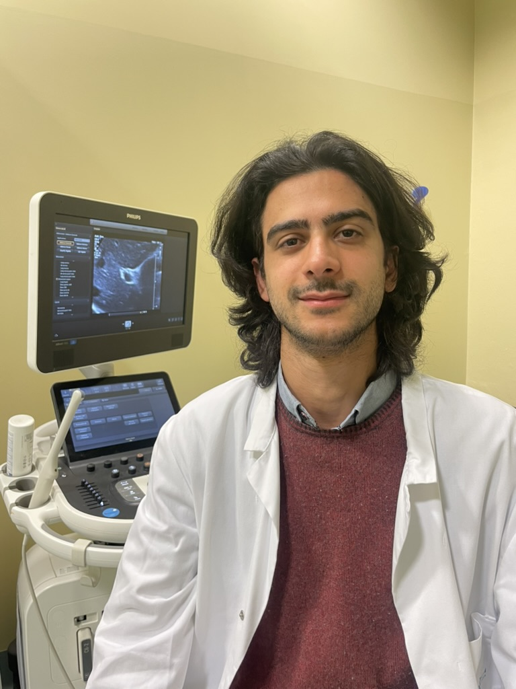

Dott. Pietro Scala
Medico Gastroenterologo e Ecografo
📌 Posizione Attuale
Gastroenterologo clinico ed ecografista
Santagostino / Società e Salute s.r.l. — Bologna, Imola (dal 10 marzo 2025)
🕰️ Posizioni Passate
- Medico vaccinatore, AUSL Bologna — 04/2021–06/2021
- Bibliotecario medico, Università Napoli Federico II — 09/2016–02/2017
🎓 Formazione
- Specializzazione in Gastroenterologia ed Endoscopia 110L — Università di Bologna, 2025
- Laurea in Medicina e Chirurgia 110L — Università di Napoli, 2020
- Erasmus — Universidade de Coimbra, 2017–2018
- Corsi & Tirocini: ACLS, SIGE, IBD